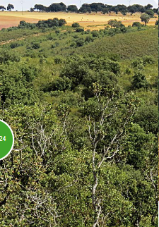

Justo al oeste de la ciudad de Zamora, a unos 5 km del casco urbano, comienza la zona más agreste de su término muni-cipal. Una sucesión de encinares y quejigales adehesados, dedicados principalmente al cultivo cerealista, se extiende por los relieves más llanos, alternando en los sectores de lomas y laderas con matorral mediterráneo de jaras, brezos y romero, y masas más o menos aclaradas de pino piño-nero, encina, alcornoque o roble melojo. También existen pequeñas fresnedas y choperas en algunos de los arroyos. Abundan las charcas o pequeñas lagunas, muy importantes para la reproducción de las poblaciones locales de anfibios y como abrevaderos para las aves y mamíferos
Se trata de una zona muy interesante para la observación de aves rapaces forestales y esteparias y de passeriformes propios del bosque y matorral mediterráneos, destacando, entre otros, el elanio común y el rabilargo ibérico. Además cuenta con una comunidad muy variada de anfibios y reptiles y una presencia importante de grandes mamíferos, entre ellos ciervo y corzo.
